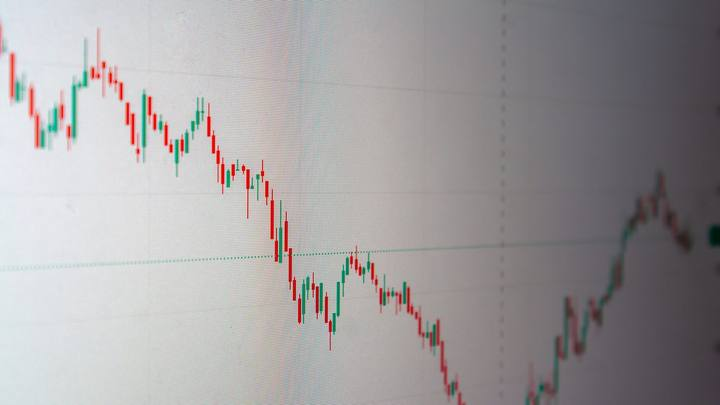
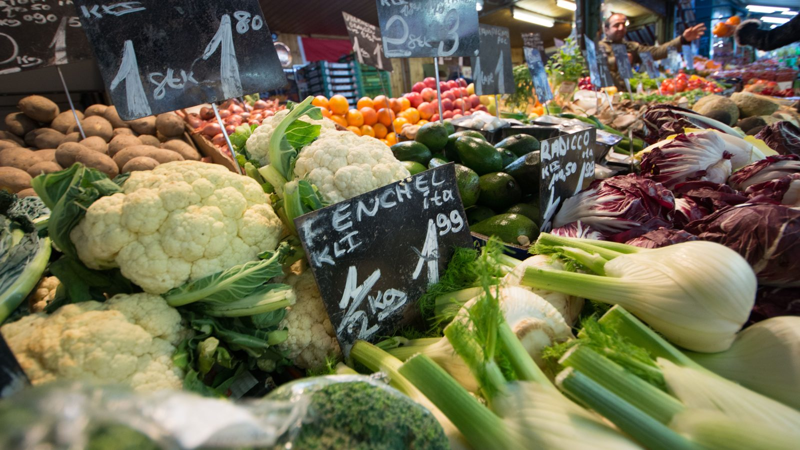

Brasil · EconomiaCopom corta a Selic para 14% ao ano, e o crédito imobiliário do litoral respira
A Selic em 14% e o efeito no crédito imobiliário do litoral.
É o quarto mês seguido de queda. A comida ficou mais barata e a conta de luz, mais cara, o que muda conforme o que pesa mais no seu orçamento.
Em 30 segundos · Modo de Leitura, formato original Santa Informa
O IPCA de julho ficou em 0,07%, contra 0,16% em junho. É o quarto mês seguido de queda e o acumulado do ano está dentro da meta.
Alimentação e bebidas caiu 0,67%, puxada pela comida em casa (-1,14%). O tomate desabou 29,09%, a batata-inglesa 19,59% e a cenoura 14,41%.
Do outro lado, Habitação subiu 0,99%, com a energia elétrica residencial em alta de 3,09%, o maior impacto individual do mês.
EconomiaPublicada em Redação Santa Informa

O IBGE divulgou o IPCA de julho, que ficou em 0,07%. Em junho tinha sido 0,16%. É o quarto mês consecutivo de desaceleração: março fechou em 0,88%, abril em 0,67%, maio em 0,58%, junho em 0,16% e agora julho.
O acumulado do ano está dentro da meta.
Alimentação e bebidas recuou 0,67%, com impacto de -0,14 ponto percentual no índice. A queda veio da comida dentro de casa, que caiu 1,14%.
Os destaques: tomate, -29,09%, sozinho responsável por -0,10 ponto percentual e o principal impacto negativo do mês; batata-inglesa, -19,59%; cenoura, -14,41%; e café moído, também em queda.
Vestuário caiu 0,66%. Nos combustíveis, recuo de 1,44%, com etanol a -2,26%, gasolina a -1,37% e diesel a -1,22%.
Habitação subiu 0,99%, acelerando desde os 0,63% de junho. O motor foi a energia elétrica residencial, que saiu de 1,53% para 3,09% e virou o maior impacto individual do mês, 0,13 ponto percentual.
Também em Habitação, água e esgoto subiu 0,40%, refletindo reajustes em capitais. E, em Transportes, passagem aérea disparou 11,67%.
Dois itens conversam direto com o litoral. A passagem aérea em alta de 11,67% mexe com um destino que viu o modal aéreo crescer 46,9% na última temporada. E inflação cedendo é o que sustenta o ciclo de corte de juros que levou a Selic a 14%, o número que decide o custo do financiamento imobiliário na região.
O resumo de 30 segundos está no topo e a versão completa é o texto acima. Aqui ficam as três leituras da casa sobre o mesmo assunto.
Clara, a otimista
Quarto mês seguido de queda e acumulado dentro da meta é notícia boa que ninguém comemora porque não vem com manchete escandalosa.
E a queda aconteceu onde mais aperta: comida dentro de casa. Tomate a menos 29% muda a conta do mercado de quem faz almoço todo dia, e isso vale mais que qualquer média.
Seu Prudêncio, o criterioso
Vale separar o que é tendência do que é sazonal. Queda forte em tomate, batata e cenoura tem muito de safra e de clima, e legume que despenca em julho costuma voltar a subir depois. Não é conquista permanente.
Merece atenção o outro lado da conta. Energia elétrica em 3,09% e passagem aérea em 11,67% são itens que não têm safra e não desabam sozinhos. Para uma cidade que depende de turista chegando de avião, o segundo número importa mais do que parece.
Sobre a média nacional: Itapema não entra no cálculo do IPCA, e o reajuste de energia e água varia por concessionária. Uma sugestão útil, para quem quer decidir com base nisso, é olhar o índice da região de Florianópolis e a tarifa da própria conta, não a manchete nacional.
Caco, o sarcástico
Tomate caiu 29%. O brasileiro passou dois anos aprendendo a viver sem tomate e agora vai ter que reaprender a fazer molho.
Em compensação a luz subiu 3%. É a economia brasileira em resumo: você economiza na salada e devolve no ventilador.
E a passagem aérea, 11,67% para cima. Vem para Itapema de carro, que é o que 72% dos turistas já faziam mesmo.
Fontes: Agência Gov, com dados do IPCA de julho divulgados pelo IBGE.

Brasil · EconomiaA Selic em 14% e o efeito no crédito imobiliário do litoral.
 Brasil · Economia
Brasil · EconomiaO Banco Central estuda ligar o Pix a sistemas de outros países.
 Litoral · Economia
Litoral · EconomiaO gasto do turista caiu 16,4% no litoral, e o modal aéreo cresceu 46,9%.